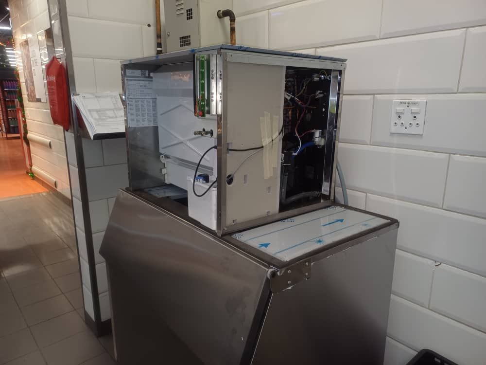

Ice Machine Maintenance: Keep Your Ice Clean, Safe and Flowing
For bars, restaurants, lodges, hotels and fish traders, ice is not an extra — it is part of the product. When the ice machine slows down on a hot Friday night, or starts producing cloudy, smelly ice, customers notice immediately. The good news is that most ice machine problems are preventable with simple, regular care.

In this guide
Why Ice Machines Need Regular Care
Health authorities treat ice as food — and for good reason. The inside of an ice machine is cool, dark and damp, which is exactly where slime, mould and bacteria like to grow. At the same time, minerals in the water slowly coat the evaporator plate, making every harvest slower and forcing the machine to work harder. In Zambia, where borehole water is often hard and ambient temperatures are high, both problems develop faster than manufacturers' manuals suggest.
Cleaning and Sanitising
Cleaning and sanitising are two separate jobs:
- Descaling (cleaning) removes mineral scale from the evaporator, water trough and distribution tubes using a manufacturer-approved nickel-safe ice machine cleaner.
- Sanitising kills bacteria, mould and slime using a food-safe sanitiser, applied to all water- and ice-contact surfaces, including the storage bin and scoop.
Most commercial machines have a built-in clean cycle. Always empty and discard the ice, follow the manufacturer's dilution rates exactly, and never use household bleach or vinegar unless the manual allows it — they can damage coatings and void warranties. A full clean and sanitise every three to six months is typical; busy bars and hard-water sites may need it more often.
Quick tip: Keep the ice scoop in a clean holder outside the bin, never buried in the ice. Hands and scoop handles are a major source of contamination.
Water Quality and Filters
Good ice starts with good water. A dedicated water filter on the ice machine's supply reduces scale, chlorine taste and sediment, giving clearer ice and protecting internal parts. Change filter cartridges on schedule (usually every six months, or sooner with borehole water) — a clogged filter starves the machine of water and slows production. Also check that water pressure is adequate, especially where supply comes from rooftop tanks or pumps that struggle during load-shedding.
Keep the Condenser Clean and Cool
Air-cooled ice machines reject heat through a condenser, usually at the front or back. Dust, grease and lint build up quickly in kitchens and bars, and a blocked condenser can cut ice production dramatically. Brush or vacuum it monthly, and make sure there is enough clearance around the machine for air to flow. Ice machines placed in hot, cramped back rooms or next to cookers and dishwashers will always struggle — ice production falls as room temperature rises, so the location matters as much as the machine.
Common Ice Machine Problems
- No ice at all: check power, the water supply tap and filter, and that the bin sensor isn't stuck in the "full" position. If the machine runs but makes nothing, it may be a refrigeration or control fault.
- Slow production: usually a dirty condenser, scaled evaporator, clogged filter or high room temperature.
- Small, thin or hollow cubes: often low water supply or a harvest problem.
- Cloudy, soft or bad-tasting ice: scale build-up, poor water quality or an overdue sanitise.
- Water leaking: blocked drain, cracked water trough or loose hose.
- Ice melting in the bin: a damaged bin seal or drain line problem.
A Simple Maintenance Schedule
- Daily: wipe exterior, check ice quality and production, keep scoop clean.
- Weekly: wipe the bin interior and door, check for leaks.
- Monthly: clean the condenser, check the air filter (if fitted) and drain.
- Every 3–6 months: full descale and sanitise; inspect water distribution components.
- Every 6 months: replace the water filter cartridge.
- Yearly: professional service — refrigeration checks, electrical checks, component inspection.
When to Call a Technician
If cleaning and a new filter do not restore normal ice production, or you notice the compressor running hot, frost on the wrong parts, error codes, tripping breakers or strange noises, it is time for a professional. Refrigerant faults and control-board issues need proper diagnostic tools. Protect the machine's electronics with surge protection, since ice machines are often damaged by spikes when power returns after load-shedding. Our refrigeration technicians service and repair commercial ice machines for hospitality businesses across Zambia, and you can add them to a maintenance contract alongside your fridges and cold rooms.
Frequently Asked Questions
How often should an ice machine be cleaned?
A full descale and sanitise every three to six months is typical. Machines in busy bars or on hard borehole water may need cleaning every one to two months.
Why is my ice machine making cloudy ice?
Cloudy ice is usually caused by minerals in the water, scale build-up on the evaporator, or a water filter that needs replacing.
Why is my ice machine not making ice?
Common causes include a closed or low water supply, a clogged filter, a bin sensor stuck on "full", a dirty condenser, or a refrigeration or control fault that needs a technician.
Can I use vinegar to clean my ice machine?
Only if the manufacturer allows it. Most commercial ice machines require a specific nickel-safe cleaner and a separate food-safe sanitiser to avoid damaging the evaporator.
Ice Machine Giving Trouble?
Book an ice machine service or repair for your bar, restaurant or lodge anywhere in Zambia.
WhatsApp Us